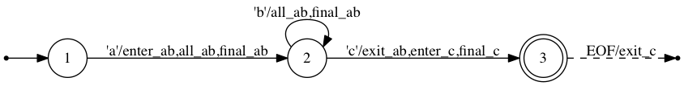

Parsing from a buffer
Automa can leverage metaprogramming to combine regex and Julia code to create parsers. This is significantly more difficult than simply using validators or tokenizers, but still simpler than parsing from an IO. Currently, Automa loads data through pointers, and therefore needs data backed by Array{UInt8} or String or similar - it does not work with types such as UnitRange{UInt8}. Furthermore, be careful about passing strided views to Automa - while Automa can extract a pointer from a strided view, it will always advance the pointer one byte at a time, disregarding the view's stride.
As an example, let's use the simplified FASTA format introduced in the regex section, with the following format: re"(>[a-z]+\n([ACGT]+\n)+)*". We want to parse it into a Vector{Seq}, where Seq is defined as:
julia> struct Seq
name::String
seq::String
endAdding actions to regex
To do this, we need to inject Julia code into the regex validator while it is running. The first step is to add actions to our regex: These are simply names of Julia expressions to splice in, where the expressions will be executed when the regex is matched. We can choose the names arbitrarily.
Currently, actions can be added in the following places in a regex:
- With
onenter!, meaning it will be executed when reading the first byte of the regex - With
onfinal!, where it will be executed when reading the last byte of the regex. Note that it's not possible to determine the final byte for some regex likere"X+", since the machine reads only 1 byte at a time and cannot look ahead. In such cases, an error is raised. - With
onexit!, meaning it will be executed on reading the first byte AFTER the regex, or when exiting the regex by encountering the end of inputs (only for a regex match, not an unexpected end of input) - With
onall!, where it will be executed when reading every byte that is part of the regex.
You can set the actions to be a single action name (represented by a Symbol), or a list of action names:
julia> my_regex = re"ABC";
julia> onenter!(my_regex, [:action_a, :action_b]);
julia> onexit!(my_regex, :action_c);In which case the code named action_a, then that named action_b will executed in order when entering the regex, and the code named action_c will be executed when exiting the regex.
The onenter! etc functions return the regex they modify, so the above can be written:
julia> my_regex = onexit!(onenter!(re"ABC", [:action_a, :action_b]), :action_c);
julia> my_regex isa RE
trueWhen the the following regex's actions are visualized in its corresponding DFA:
regex = let
ab = re"ab*"
onenter!(ab, :enter_ab)
onexit!(ab, :exit_ab)
onfinal!(ab, :final_ab)
onall!(ab, :all_ab)
c = re"c"
onenter!(c, :enter_c)
onexit!(c, :exit_c)
onfinal!(c, :final_c)
ab * c
endThe result DFA looks below. Here, the edge labeled 'a'/enter_ab,all_ab,final_ab means that the edge consumes input byte 'a', and executes the three actions enter_ab, all_ab and final_ab, in that order.

Compiling regex to Machines
In order to create code, the regex must first be compiled to a Machine, which is a struct that represents an optimised DFA. We can do that with compile(regex). Under the hood, this compiles the regex to an NFA, then compiles the NFA to a DFA, and then optimises the DFA to a Machine (see the section on Automa theory).
Normally, we don't care about the regex directly, but only want the Machine. So, it is idiomatic to compile the regex in the same let statement it is being built in:
machine = let
header = re"[a-z]+"
seqline = re"[ACGT]+"
record = re">" * header * '\n' * rep1(seqline * '\n')
compile(rep(record))
end
@assert machine isa Automa.MachineNote that, if this code is placed at top level in a package, the regex will be constructed and compiled to a Machine during package precompilation, which greatly helps load times.
Creating our parser
However, in this case, we don't just need a Machine with the regex, we need a Machine with the regex containing the relevant actions. To parse a simplified FASTA file into a Vector{Seq}, I'm using these four actions:
- When the machine enters into the header, or a sequence line, I want it to mark the position with where it entered into the regex. The marked position will be used as the leftmost position where the header or sequence is extracted later.
- When exiting the header, I want to extract the bytes from the marked position in the action above, to the last header byte (i.e. the byte before the current byte), and use these bytes as the sequence header
- When exiting a sequence line, I want to do the same: Extract from the marked position to one before the current position, but this time I want to append the current line to a buffer containing all the lines of the sequence
- When exiting a record, I want to construct a
Seqobject from the header bytes and the buffer with all the sequence lines, then push theSeqto the result,
julia> machine = let
header = onexit!(onenter!(re"[a-z]+", :mark_pos), :header)
seqline = onexit!(onenter!(re"[ACGT]+", :mark_pos), :seqline)
record = onexit!(re">" * header * '\n' * rep1(seqline * '\n'), :record)
compile(rep(record))
end;We can now write the code we want executed. When writing this code, we want access to a few variables used by the machine simulation. For example, we might want to know at which byte position the machine is when an action is executed. Currently, the following variables are accessible in the code:
byte: The current input byte as aUInt8p: The 1-indexed position ofbytein the bufferp_end: The length of the input bufferis_eof: Whether the machine has reached the end of the input.cs: The current state of the machine, as an integerdata: The input buffermem: The memory being read from, anAutoma.SizedMemoryobject containing a pointer and a length
The actions we want executed, we place in a Dict{Symbol, Expr}:
julia> actions = Dict(
:mark_pos => :(pos = p),
:header => :(header = String(data[pos:p-1])),
:seqline => :(append!(buffer, data[pos:p-1])),
:record => :(push!(seqs, Seq(header, String(buffer))))
);For multi-line Expr, you can construct them with quote ... end blocks.
We can now construct a function that parses our data. In the code written in the action dict above, besides the variables defined for us by Automa, we also refer to the variables buffer, header, pos and seqs. Some of these variables are defined in the code above (for example, in the :(pos = p) expression), but we can't necessarily control the order in which Automa will insert these expressions into out final function. Hence, let's initialize these variables at the top of the function we generate, such that we know for sure they are defined when used - whenever they are used.
The code itself is generated using generate_code:
julia> @eval function parse_fasta(data)
pos = 0
buffer = UInt8[]
seqs = Seq[]
header = ""
$(generate_code(machine, actions))
return seqs
end
parse_fasta (generic function with 1 method)We can now use it:
julia> parse_fasta(">abc\nTAGA\nAAGA\n>header\nAAAG\nGGCG\n")
2-element Vector{Seq}:
Seq("abc", "TAGAAAGA")
Seq("header", "AAAGGGCG")If we give out function a bad input - for example, if we forget the trailing newline, it throws an error:
julia> parse_fasta(">abc\nTAGA\nAAGA\n>header\nAAAG\nGGCG")
ERROR: Error during FSM execution at buffer position 33.
Last 32 byte(s) were:
">abc\nTAGA\nAAGA\n>header\nAAAG\nGGCG"
Observed input: EOF at state 5. Outgoing edges:
* '\n'/seqline
* [ACGT]
Input is not in any outgoing edge, and machine therefore errored.The code above parses with about 300 MB/s on my laptop. Not bad, but Automa can do better - read on to learn how to customize codegen.
Preconditions
You might have noticed a peculiar detail about our FASTA format: It demands a trailing newline after each record. In other words, >a\nA is not a valid FASTA record.
We can easily rewrite the regex such that the last record does not need a trailing \n. But look what happens when we try that:
julia> machine = let
header = onexit!(onenter!(re"[a-z]+", :mark_pos), :header)
seqline = onexit!(onenter!(re"[ACGT]+", :mark_pos), :seqline)
record = onexit!(re">" * header * '\n' * seqline * rep('\n' * seqline), :record)
compile(opt(record) * rep('\n' * record) * rep(re"\n"))
end;
ERROR: Ambiguous NFA.Why does this error? Well, remember that Automa processes one byte at a time, and at each byte, makes a decision on what actions to execute. Hence, if it sees the input >a\nA\n, it does not know what to do when encountering the second \n. If the next byte is, e,g. A, then it would need to execute the :seqline action. If the byte is >, it would need to execute first :seqline, then :record. Automa can't read ahead, so, the regex is ambiguous and the true behaviour when reading the inputs >a\nA\n is undefined. Therefore, Automa refuses to compile it.
There are several ways to solve this:
- First, you can rewrite the regex to not be ambiguous. This is usually the preferred option: After all, if the regex is ambiguous, you probably made a mistake with the regex
- You can manually diasable the ambiguity check by passing the keyword
unambiguous=falsetocompile. This will cause the machine to undefined behaviour if an input like>a\nA\nis seen, so this is usually a poor idea. - You can rewrite the actions, such that the action itself uses an if-statement to check what to do. In the example above, you could remove the
:recordaction and have the:seqlineaction conditionally emit a record if the next byte was>.
Finally, you can use preconditions. A precondition is a symbol, attached to a regex, just like an action. Just like an action, the symbol is attached to an Expr object, but for preconditions this must evaluate to a Bool. If false, the regex is not entered.
Let's have an example. The following machine is obviously ambiguous:
julia> machine = let
a = onenter!(re"XY", :a)
b = onenter!(re"XZ", :b)
compile('A' * (a | b))
end;
ERROR: Ambiguous NFA.We can add a precondition with precond!. Below, precond!(regex, label) is equivalent to precond!(regex, label; when=:enter, bool=true). This means "only enter regex when the boolean expression label evaluates to bool (true)":
julia> machine = let
a = precond!(onenter!(re"XY", :a), :test)
b = precond!(onenter!(re"XZ", :b), :test; bool=false)
compile('A' * (a | b))
end;
julia> machine isa Automa.Machine
trueHere, re"XY" can only be entered when :test is true, and re"XZ" only when :test is false. So, there can be no ambiguous behaviour and the regex compiles fine.
Reference
Automa.RegExp.onenter! — Functiononenter!(re::RE, a::Union{Symbol, Vector{Symbol}}) -> reSet action(s) a to occur when reading the first byte of regex re. If multiple actions are set by passing a vector, execute the actions in order.
See also: onexit!, onall!, onfinal!
Example
julia> regex = re"ab?c*";
julia> regex2 = onenter!(regex, :entering_regex);
julia> regex === regex2
trueAutoma.RegExp.onexit! — Functiononexit!(re::RE, a::Union{Symbol, Vector{Symbol}}) -> reSet action(s) a to occur when reading the first byte no longer part of regex re, or if experiencing an expected end-of-file. If multiple actions are set by passing a vector, execute the actions in order.
See also: onenter!, onall!, onfinal!
Example
julia> regex = re"ab?c*";
julia> regex2 = onexit!(regex, :exiting_regex);
julia> regex === regex2
trueAutoma.RegExp.onall! — Functiononall!(re::RE, a::Union{Symbol, Vector{Symbol}}) -> reSet action(s) a to occur when reading any byte part of the regex re. If multiple actions are set by passing a vector, execute the actions in order.
See also: onenter!, onexit!, onfinal!
Example
julia> regex = re"ab?c*";
julia> regex2 = onall!(regex, :reading_re_byte);
julia> regex === regex2
trueAutoma.RegExp.onfinal! — Functiononfinal!(re::RE, a::Union{Symbol, Vector{Symbol}}) -> reSet action(s) a to occur when the last byte of regex re. If re does not have a definite final byte, e.g. re"a(bc)*", where more "bc" can always be added, compiling the regex will error after setting a final action. If multiple actions are set by passing a vector, execute the actions in order.
See also: onenter!, onall!, onexit!
Example
julia> regex = re"ab?c";
julia> regex2 = onfinal!(regex, :entering_last_byte);
julia> regex === regex2
true
julia> compile(onfinal!(re"ab?c*", :does_not_work))
ERROR: [...]Automa.RegExp.precond! — Functionprecond!(re::RE, s::Symbol; [when=:enter], [bool=true]) -> reSet re's precondition to s. Before any state transitions to re, or inside re, the precondition code s is checked to be bool before the transition is taken.
when controls if the condition is checked when the regex is entered (if :enter), or at every state transition inside the regex (if :all)
Example
julia> regex = re"ab?c*";
julia> regex2 = precond!(regex, :some_condition);
julia> regex === regex2
trueAutoma.generate_code — Functiongenerate_code([::CodeGenContext], machine::Machine, actions=nothing)::ExprGenerate init and exec code for machine. The default code generator function for creating functions, preferentially use this over generating init and exec code directly, due to its convenience. Shorthand for producing the concatenated code of:
generate_init_code(ctx, machine)generate_action_code(ctx, machine, actions)generate_input_error_code(ctx, machine)[elided if actions == :debug]
Examples
@eval function foo(data)
# Initialize variables used in actions
data_buffer = UInt8[]
$(generate_code(machine, actions))
return data_buffer
endSee also: generate_init_code, generate_exec_code
Automa.generate_init_code — Functiongenerate_init_code([::CodeGenContext], machine::Machine)::ExprGenerate variable initialization code, initializing variables such as p, and p_end. The names of these variables are set by the CodeGenContext. If not passed, the context defaults to DefaultCodeGenContext
Prefer using the more generic generate_code over this function where possible. This function should be used if the initialized data should be modified before the execution code.
Example
@eval function foo(data)
$(generate_init_code(machine))
p = 2 # maybe I want to start from position 2, not 1
$(generate_exec_code(machine, actions))
return cs
endSee also: generate_code, generate_exec_code
Automa.generate_exec_code — Functiongenerate_exec_code([::CodeGenContext], machine::Machine, actions=nothing)::ExprGenerate machine execution code with actions. This code should be run after the machine has been initialized with generate_init_code. If not passed, the context defaults to DefaultCodeGenContext
Prefer using the more generic generate_code over this function where possible. This function should be used if the initialized data should be modified before the execution code.
Examples
@eval function foo(data)
$(generate_init_code(machine))
p = 2 # maybe I want to start from position 2, not 1
$(generate_exec_code(machine, actions))
return cs
endSee also: generate_init_code, generate_exec_code